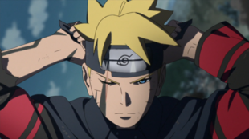

Assistir Boruto Online
Boruto Uzumaki é um shinobi do clã Uzumaki de Konohagakure, assim como um descendente do clã Hyūga. Ele também é um membro do Time Konohamaru. Desde que seu pai, Naruto Uzumaki, se tornou Hokage, Boruto passou a ser ressentido com ele por nunca ter tempo o suficiente para ele e sua família, levando-o a agir de maneira indignada. Ele também tinha uma tendência a tomar atalhos como um ninja em vez de depender de sua própria força. No entanto, após o treinamento sob a tutela de Sasuke Uchiha e sua luta contra Momoshiki e Kinshiki Ōtsutsuki com seu pai e professor, Boruto eventualmente passou a respeitar seu pai e seu papel como Hokage, mas mesmo assim ele promete ir por um caminho diferente do que Naruto escolheu, decidindo se tornar um ninja como Sasuke.

Habilidades
Boruto é um prodígio, que é dito como sendo capaz de realizar qualquer coisa que tente.[4] Ele é considerado um genin de elite, [5] tanto que Mitsuki acredita que é inevitável, que ele será Hokage um dia. Quando seu pai treinou com ele antes de sua graduação na Academia, Naruto brevemente esqueceu que ele estava lutando apenas contra um aluno da Academia e não se segurou contra Boruto.[6] Sasuke reconheceu o potencial de Boruto e o escolheu como seu discípulo; sob sua tutela, Boruto refinou suas habilidades o suficiente para provar ter sido crucial na derrota do Momoshiki.
Chakra
Graças a sua descendência Uzumaki, Boruto é notado como uma grande quantidade de estamina, conseguindo gerar uma grande quantidade de chakra. Antes mesmo de entrar para a academia, ele era capaz de utilizar quatro clones das sombras tranquilamente. Mesmo após ter grande parte do seu chakra absorvido, Boruto ainda possuía força o suficiente para lutar em conjunto de vários de seus clones. Seu controle de chakra é impressionante, sendo capaz de alterar a sua natureza em até três tipos diferentes. Graças a sua habilidade em transformação de forma, conseguiu elevar a sua habilidade até o ultimo nível, realizando a proeza de aprender o Rasengan e infundir uma natureza elemental quase instintivamente.
Taijutsu
Boruto possui uma incrível agilidade, como visto quando ele percorre sobre os prédios com feitos de acrobacia com muita naturalidade. Devido a sua velocidade, ele consegue surpreender seus inimigos, ao chegar de surpresa atrás deles, sem que percebam. Ele demonstra uma grande aptidão para taijutsu, dando provas de que sua habilidade ninja, começou a ser refinada antes de iniciar a academia. Na academia, ele conseguiu superar Iwabee, um aluno mais avançado que ele, com relativa facilidade, combinando ataques simultâneos com o auxílio dos seus clones das sombras. Graças aos seus clones, Boruto consegue realizar diversas acrobacias em pleno ar, demonstrando uma perícia incomum para um aluno da sua idade. Boruto consegue utilizar o Punho Gentil, porém graças a ausência do Byakugan, ele é incapaz de acertar o tenketsu de algum inimigo.
Jōgan
Boruto possui um dōjutsu exclusivo em seu olho direito. No dia em que ele se tornou um Estudante de Academia, Boruto demonstrou a capacidade de ativar inconscientemente um dōjutsu em seu olho direito, que lhe concede a capacidade de detectar coisas que ele as não notaria normalmente. Muitos anos depois, ele poderia ativá-lo à vontade, juntamente de marcações pretas em seu corpo.[8] Tendo o sangue de um usuário do Byakugan, Boruto foi capaz de se comunicar com o espírito de Momoshiki. Não se sabe ao certo que tipo de habilidades esse dōjutsu lhe proporciona, mas ele lhe permitiu ver o chakra maligno emanado por Denki, Metal Lee e Shino Aburame,[9] bem como enxergar e interagir com o espírito do falecido Momoshiki.[10]